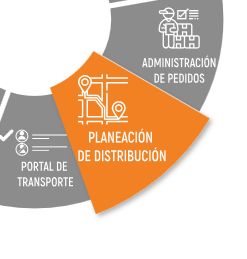
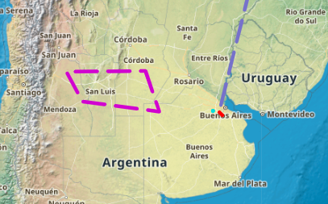

Planeación de Distribución#
Ruteo#
Para lograr la optimización de las paradas en la planificación de rutas, es importante comprender la naturaleza de ambos métodos principales: rutas fijas y rutas dinámicas.
Rutas Fijas:
En las rutas fijas, cada ruta tiene un conjunto específico de paradas en un orden predeterminado que no varía. Esto garantiza que los destinatarios siempre recibirán sus productos o carga en el horario especificado, a menudo por el mismo conductor.
Rutas Dinámicas:
Por otro lado, las rutas dinámicas optimizan todos los puntos de entrega y recolección en la ruta más eficiente, teniendo en cuenta restricciones de horario, distancia y optimización de carga. En este caso, los destinos suelen ser atendidos por diferentes vehículos y conductores. Este enfoque busca aprovechar al máximo el tiempo y la eficiencia en la distribución de las cargas, adaptándose a las distancias recorridas y al tipo de vehículo utilizado.
Módulo de Ruteo#
La planificación de rutas se refiere al proceso de selección de entregas, productos, transporte y otros factores relevantes para la distribución, con el objetivo de crear rutas óptimas. El módulo de «Routing» en UNIGIS TMS cuenta con la capacidad de planificar, diseñar y optimizar todas las rutas logísticas basadas en reglas de negocio y parámetros configurables. Esto permite reducir los tiempos de planificación, en ruta y de entrega de forma automática.
Se consideran diversas variables al planificar una ruta, como horarios de entrega, tipos de vehículos, dimensiones del pedido, rutas optimizadas, ubicaciones de depósitos, coordenadas geográficas, datos logísticos y ventanas horarias, entre otras.
El módulo de Ruteo (Routing) está disponible en todas las soluciones de UNIGIS TMS, accesible a través de la versión web en la pantalla principal (Home).
Una orden proporciona los datos generales para la entrega del pedido, incluyendo qué hacer, a dónde ir, cuándo y qué productos contiene. Este proceso se inicia desde el administrador de pedidos e implica:
Gestión del transporte para la distribución.
Geo codificación de direcciones con normalización.
Planeación óptima de rutas de distribución.
Optimización del espacio de carga de los vehículos.
Reglas de negocio configurables por operación, transporte, volumetría, tipo de producto y ventanas horarias, entre otros.
Restricciones geográficas y de circulación considerando el tráfico.
Entrega y recolección de mercancías, incluyendo logística inversa.
Utilización de mapas digitales globales.
Entidades#
Planificar una solicitud de transporte dispone con la previa creación de una estructura base, configuración y catálogos involucrados en la transacción de datos para una nueva orden ruta. Es necesario realizar la configuración de las entidades relacionadas a los flujos de trabajo jornada, orden y rutas para iniciar con la operación.
Establecido el pedido o solicitud de transporte estos se pueden referenciar la cantidad de órdenes necesarias. Las ordenes perteneces a una única jornada, operación y fechas por su naturaleza del pedido. En la planificación no se planifica hacia un vehículo, si no con un tipo de vehículo disponible en un depósito correspondiente a una operación para las características especificas que presentan la ruta, jornada y orden para cumplir con su objetivo el domicilio orden.


Configuración de Datos generales#
Catálogos que considerar antes de empezar a planificar una ruta
Depósitos. Es el centro de distribución donde parte o regresan los vehículos, área de influencia. El depósito cuenta con una zona de ruteo preferente. Datos generales del depósito, cercanía, dirección, parámetros horarios, carga, parámetros internacionales, jurisdicción. planificar por tipo de depósito y producto.
Tipos de vehículos. Cada tipo de vehículo dispone con ciertas características para peso, carga, especificaciones de vehículo, velocidad máxima o mínima para la configuración de alertas, cantidad de la flota de vehículos, dimensiones de carga, tiempos de inactividad, momento más optimo, Alertas de velocidad máxima. Recursos disponibles
Tipo de Jornada. Agrupador de ordenes utilizadas para planificar en el momento, guía de operación. Planificar ordenes para una jornada del día. Para fijas o dinámicas. Descripción, tipo de operación, filtro de ordenes clasificar a un tipo de operaciones a considerar dentro de la jornada, segmentar jornada con tipos de jornada, jornada por tipo de jornada.
Muelles. Por tipo de vehículo- muelle. Deposito asignado, descripción, horarios de operación, tipo de muelle, días permitidos. Restricción por tipo de vehículo para cada muelle. La asignación y disponibilidad.
Zonas de planificación. Geo referencia. Área de influencia zona metropolitana dibujar una zona de propiedad para ruteo. Por órdenes para planificar. Las zonas son una entidad fundamental no solo delimitan las zonas de ruteo si no que se pueden contar con restricciones por zonas por tipos de vehículos, por condiciones, horarios, peso o volumen por área. Zona de ruteo por operación o tipo de jornada. Prioridad de zonas. Geo editor, zonas de peligro zonas de depósitos, zonas de ruteo, factor importante.
Escenarios de planificación. condiciones
Ordenes geo codificadas. Propiedades a función en la zona de la que se encuentren respetando los parámetros.
Principales Datos de la Orden#
Un pedio realiza las ordenes de entrega para completar una jornada, La orden especifica que es lo que se tiene que realizar. (donde, como, hora,) Principales datos que deben de disponer una orden de entrega. - Delivery note. (Referencia de Entrega) - Descripción. - Dirección. - Variables de peso, volumen, bultos, palets. - Horarios. - Tiempos de espera. - Tipo de entrega.
Todos los datos son indispensables para la construcción de la ruta.
Para que la orden sea considerada para planificar tiene que estar dentro del horario efectivo de la ruta según las entidades que intervienen.
El centro de distribución tiene que estar disponible dentro del horario efectivo de la ruta, el vehículo debe de pertenecer al tipo de deposito disponible y dentro de la franja horaria de la distribución y coincidir los horarios del domicilio orden para llegar a su entrega.
A considerar tiempos de embarque, traslados, etc.
La configuración de datos generales para órdenes se centra en los escenarios, los cuales son responsables de la distribución de productos o mercancías desde ciertos depósitos hasta su usuario final. Dentro de estos modelos, se consideran variables como clientes, demanda y las posibles rutas, las cuales desempeñan un papel importante en la gestión logística.
Se busca optimizar la salida de vehículos dependiendo de la ubicación del depósito, teniendo en cuenta aspectos como la disposición lineal por calles. Se incluyen datos generales, la consolidación de escenarios y la identificación de posibles barreras áreas.
Consolidación#
Para optimizar la entrega de varias órdenes en un mismo domicilio, se busca consolidarlas en una sola parada. Esto implica agrupar las órdenes en una misma ubicación geográfica o parada, dentro de un radio de influencia determinado.
En el caso de entregas verticales, donde se realizan diferentes entregas en la misma calle, se busca también consolidarlas en un radio de influencia para optimizar tanto la parada del vehículo como el tiempo del conductor. Por ejemplo, en el caso de entregas de servicios de agua, se considera la cercanía, la ubicación exacta o un radio de influencia dentro de una distancia preestablecida.
Además, se promedian los tiempos de espera y se establece un máximo tiempo de espera para garantizar una gestión eficiente de la entrega de las órdenes.
Escenarios#
Se permite crear diferentes escenarios a medida de la planificación de una operación con las condiciones presentadas al Domicilio orden, por ejemplo, un escenario para temporada baja, para turno nocturno, por vehículos, por zonas de riesgo, etc.
Dependiendo la cantidad de órdenes y jornadas a asignar.
El radio de densidad o influencia de las órdenes busca optimizar matemáticamente la cantidad de kilómetros recorridos y la cantidad de productos entregados, garantizando que las rutas no se dispersen geográficamente y se planifiquen de manera óptima sin superposiciones. Se utiliza el concepto de baricentro para determinar la ubicación central, y se establece una distancia máxima entre cada orden para evitar la dispersión y optimizar la eficiencia logística.
Parámetros generales
Al iniciar la planificación de rutas, es crucial establecer un punto de partida óptimo mediante la preferencia de selección del baricentro, utilizando una semilla seleccionada. Esta elección se basa en la conveniencia para comenzar las paradas preferentemente al inicio de la ruta.
Se prioriza la selección según los siguientes criterios:
Grupos: Buscando la idea de no generar solapamiento entre rutas, autoclustering, grupo de rutas
Vehículos: Reutilización de tipo de vehículos, preferencias por tipo de vehículo. Porcentaje de cargas. Volumetría. Depósitos automáticos. Optimización de vehículos. Permitir a los vehículos múltiples depósitos.
Horarios: Deposito, salida, vehículos, ordenes, ventanas de simulación. Por intervalos ampliar fn. La selección del resultado optimo validar cual es la mejor. evalúa todos los parámetros mejorar detalles de la planificación particulares dentro de la ruta a otra.
- Parámetros avanzados
Priorizar construcción de ruta, restricciones. Primera orden, concurrencia, ruteo por calles. Contorno avanzado algoritmo que permite un contorno más especifico por área.
- Optimización
Parámetro una vez generado la ruta se valida por una optimización de su preferencia.
Barreras/Áreas#
Las barreras se refieren a obstáculos o limitaciones que pueden afectar el proceso de gestión de transporte. Estas barreras pueden incluir:
Limitaciones legales o regulatorias que afectan las operaciones de transporte, como restricciones de peso, horarios de conducción y descanso, y regulaciones de emisiones.
Limitaciones de infraestructura, como carreteras en mal estado, puentes con restricciones de altura o capacidad, y restricciones de acceso a ciertas áreas.
Barreras tecnológicas, como la falta de integración entre sistemas de gestión, problemas de conectividad en ruta, y limitaciones de seguimiento y monitoreo en tiempo real.
Obstáculos operativos, como retrasos en el procesamiento de órdenes, falta de visibilidad de la cadena de suministro, y dificultades para coordinar las actividades de carga y descarga.
Barreras comerciales, como aranceles, impuestos y tarifas, así como restricciones de importación y exportación que pueden afectar el flujo de mercancías a través de las fronteras
Dentro de UNIGIS TMS se pueden establecer áreas a las diferentes secciones o aspectos que son gestionados y controlados dentro del sistema. Estas áreas pueden incluir:
Gestión de flotas: Que se encarga de controlar y administrar los vehículos de transporte, incluyendo su asignación, mantenimiento, y seguimiento en tiempo real.
Planificación de rutas: Que consiste en determinar las rutas óptimas para las entregas, teniendo en cuenta factores como la distancia, el tráfico, y las restricciones de carga.
Gestión de órdenes: Que se encarga de procesar y gestionar todas las órdenes de transporte, desde la recepción hasta la entrega final.
Seguimiento y monitoreo: Que implica el seguimiento en tiempo real de los vehículos y las órdenes, para garantizar su cumplimiento y detectar posibles problemas o retrasos.
Gestión de documentos: Que incluye la administración y almacenamiento de todos los documentos relacionados con las operaciones de transporte, como facturas, documentos de transporte, y certificados de seguridad.
Estas áreas son fundamentales para el funcionamiento eficiente y efectivo, ya que permiten gestionar todos los aspectos relacionados con la logística y el transporte de manera integrada y coordinada.
Crear Rutas#
El producto ofrece diversas soluciones para la creación y gestión de pedidos, accesibles a través del administrador de pedidos web, el portal colaborativo B2B (Business-To-Business), UNIGIS FLEET o mediante Web Service. Estas soluciones están diseñadas para recopilar los datos necesarios sobre los servicios solicitados. A continuación, se detallan:
Administrador de Pedidos Versión Web: Permite la gestión de pedidos a través de una interfaz web accesible.
Portal Colaborativo B2B: Proporciona una plataforma para la interacción y gestión de pedidos entre empresas.
UNIGIS FLEET: Ofrece funcionalidades específicas para la gestión de pedidos dentro del entorno UNIGIS.
Web Service: Permite la integración del sistema de pedidos con otros sistemas a través de servicios web.
En cuanto a la captura de datos, estas soluciones incluyen campos para recopilar la información necesaria sobre el servicio solicitado. Estos campos pueden ser personalizados según los requerimientos del usuario. En el contexto de UNIGIS TMS, se destaca el módulo «Routing», una herramienta fundamental para la planificación de rutas. Este módulo permite la planificación automática o manual de rutas, así como la gestión de la aprobación de pedidos dentro de un período establecido para la recolección y entrega. Algunos aspectos importantes del módulo «Routing» son:
Configuración por jornadas de recolección/entrega, donde un día puede contener múltiples jornadas.
Visualización de datos relevantes de la jornada, como el número de órdenes y los clientes correspondientes para planificar la ruta.
Posibilidad de crear nuevas jornadas para la planificación de rutas adicionales.
Este módulo proporciona una visión integral de las actividades de recolección y entrega, facilitando la optimización de las operaciones logísticas dentro de UNIGIS TMS.
Antes de crear una nueva ruta se puede estableces parámetros entendidas como reglas de negocios para la jornada seleccionada, como lo son: marcar zonas, escenarios, horarios, tipo de vehículos autorizados, radio máximo, recolecciones, optimización, etc. Todo esto de manera visual dentro del mapa de geolocalización.